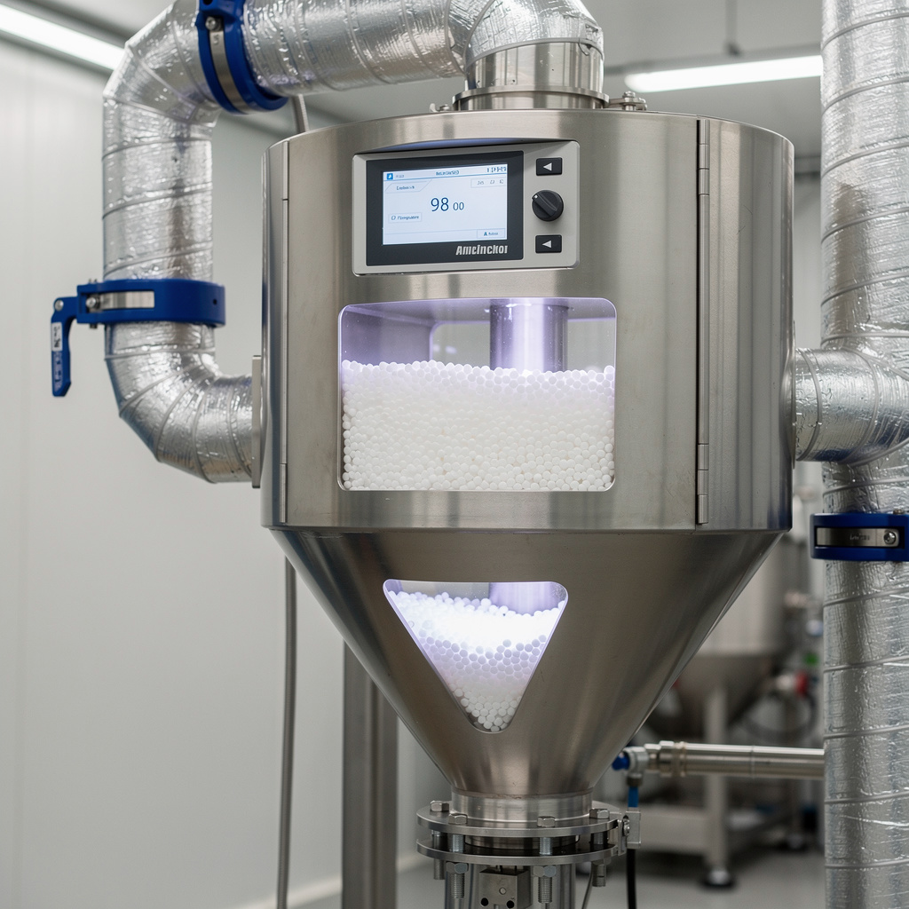
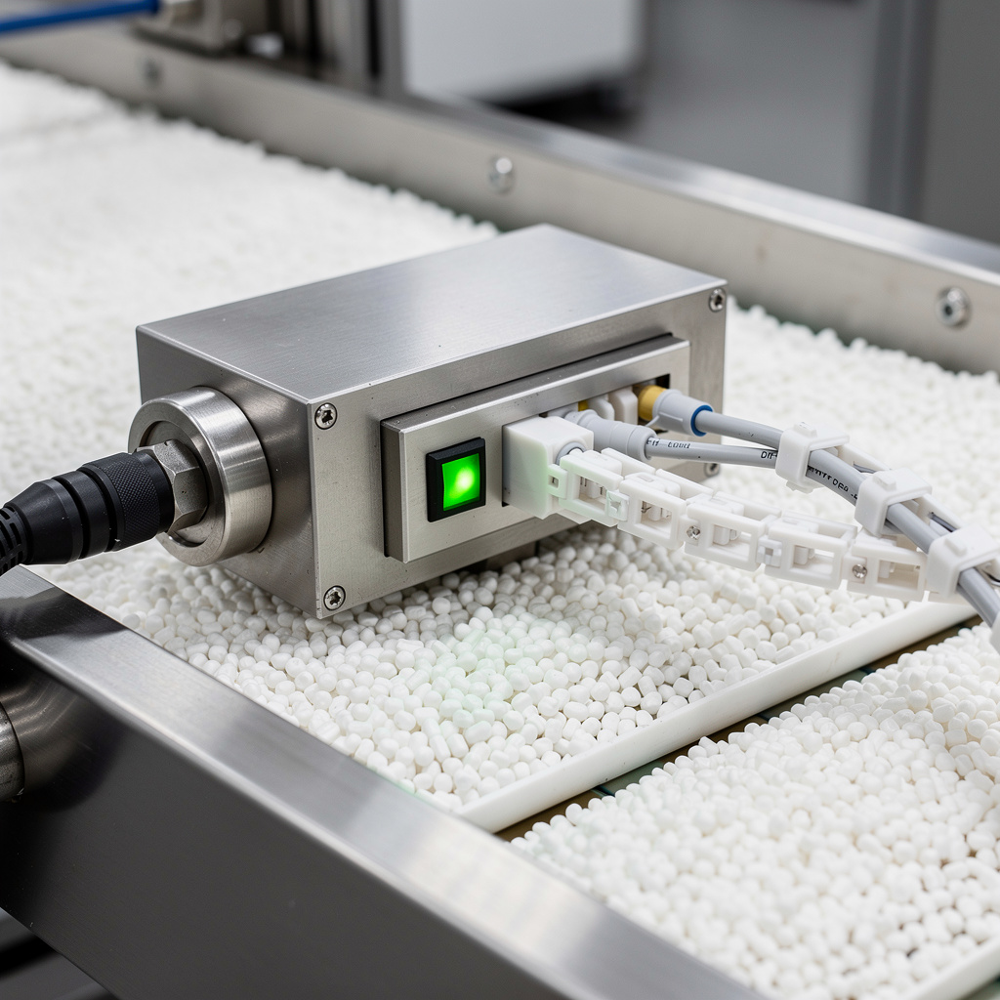

Contexte : Relocalisation d'une cellule d'injection dans un nouveau hall. Objectif production client automobile en J+2.
Cible : démarrage qualité premier jet, cycle stable < 20 secondes, 0 rebut sur batch de validation.
?
// Préparation
Vérification des arrivées électriques 400 V tri + N + T, hydrauliques 120 bar, eau de refroidissement 20 °C. Plan de pose constructeur, niveau huile, propreté des circuits.
FIG. 01Vue d'ensemble — Presse injection 120 t

FIG. 02Sécheur à granulés PA66 — auxiliaire presse

FIG. 03Détecteur de métal en ligne d'alimentation
✓
// Séquence de mise en service
01.
TRANSPORT & POSE — dépose outillage (moule 24 cavités), transport chariot élévateur, 4 plots anti-vibratoires, nivellement laser <0,2 mm, alignement axe presse / convoyeur amont.
02.
ÉLECTRIQUE — branchement 400 V tri + N + T, tableau divisionnaire dédié, résistance de terre < 1 Ω.
03.
HYDRAULIQUE — raccordement flexibles, serrage au couple, essai pression statique 10 % au-dessus nominale / 10 min sans fuite.
PARAMÉTRAGE — vitesse injection, pression maintien, temps refroidissement selon fiche moule. Réglage coussin. Batch test 500 pièces.
08.
QUALITÉ — mesure dimensionnelle pied à coulisse digital, tolérance ±0,05 mm, 0 pièce hors tolérance sur 500.
09.
DOC & FORMATION — PV de recette signé Production + Qualité + Maintenance. Formation de 3 opérateurs.
→
// Résultat
Mise en production effective J+2. Cycle moyen 18,5 s (objectif < 20 s). 0 défaut qualité sur les 500 pièces de validation. Checklist 42 points créée et réutilisée sur 2 autres presses relocalisées le trimestre suivant.